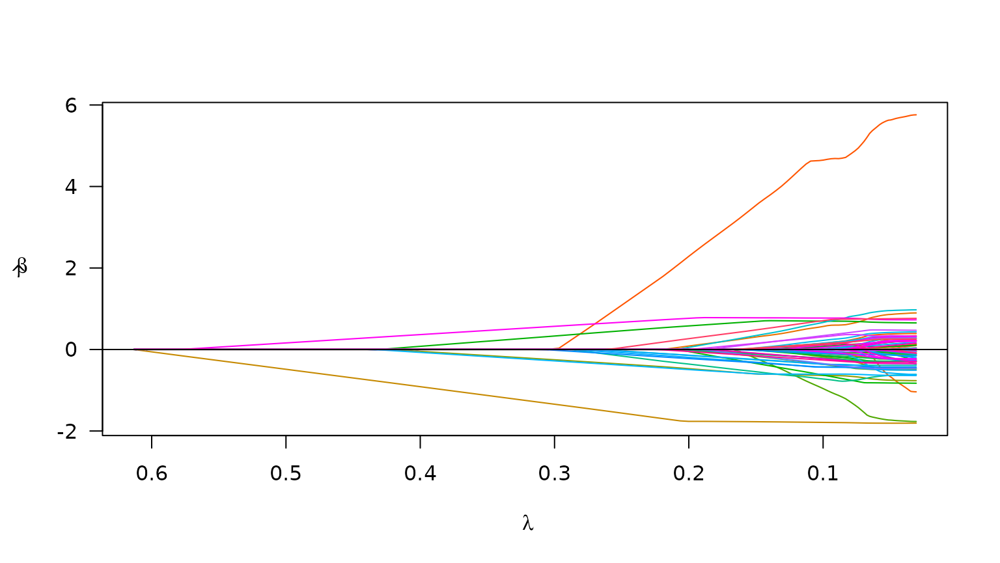

Getting started with plmm
Tabitha Peter
getting-started.Rmd
library(plmm)NOTE: This vignette is under development – not all of the examples here are fully worked through. My work here is an example of working with the garage door open.
Introduction
plmm is an R package created for the
purpose of fitting penalized regression models to high dimensional data,
particularly that in which the observations are not independent. This
kind of data arises often in the context of genetics (e.g. GWAS
dealing with population structure), and this will be the motivation for
the examples presented here.
At this time, the package is designed for linear regression only – that is, we are considering only continuous (numeric) outcomes. In the future, I would like to extend this package to handle logistic regression (to handle dichotomous outcomes).
Since we are focused on penalized regression in this package,
plmm offers 3 choices of penalty: the minimax concave
(MCP), the smoothly clipped absolute deviation (SCAD), and the least
absolute shrinkage and selection operator (LASSO). Much of the work in
this package is built on the concepts/techniques provided in the
ncvreg package, whose author is
my dissertation
advisor.
plmm currently includes two example data sets:
admixis a small data set (197 observations, 100 SNPs) that describes individuals of different racial backgrounds. The outcome ofadmixis simulated to include population structure effects (i.e. race/ethnicity have an impact on the SNP associations).penncath_lite(data on coronary artery disease from the PennCath study) is a mid-sized, high dimensional data set (1401 observations, 4217 SNPs) with several health outcomes as well as age and sex information. This data set is a subset of a much larger data set (the original data has over 800K SNPs). For for information on this data set, refer to the original publication.
In this overview, I will provide a demo of the main functions in
plmm using the admix data. Checkout the
‘Working with PLINK files’ vignette to see a demo of processing the
penncath_lite data from the original PLINK file
formats.
Basic model fitting
The admix data is already formatted to have elements
\(X\) and \(y\), so I can jump right in with a call to
plmm:
admix_fit <- plmm(X = admix$X, y = admix$y)
summary(admix_fit, lambda = admix_fit$lambda[95])
#> MCP-penalized regression model with n=, p=101 at lambda=0.0349
#> -------------------------------------------------
#> The model converged
#> -------------------------------------------------
#> # of non-zero coefficients: 80
#> -------------------------------------------------The returned beta_vals item is a matrix whose rows are
\(\beta\) coefficients and whose
columns represent values of the penalization parameter \(\lambda\). By default, plmm
fits 100 values of \(\lambda\) (see the
setup_lambda function for details).
admix_fit$beta_vals[1:10, 97:100]
#> 0.0328 0.0319 0.0309 0.0300
#> (Intercept) -3.646252e+14 -3.641797e+14 -3.635221e+14 -3.606863e+14
#> Snp1 -4.569951e-01 -4.578702e-01 -4.588573e-01 -4.620568e-01
#> Snp2 1.290528e-01 1.339690e-01 1.387797e-01 1.441289e-01
#> Snp3 5.664828e+00 5.663927e+00 5.662990e+00 5.646975e+00
#> Snp4 4.066041e-01 4.062007e-01 4.055993e-01 4.037997e-01
#> Snp5 -9.689787e-01 -9.721192e-01 -9.753301e-01 -9.680589e-01
#> Snp6 -6.066207e-02 -6.244764e-02 -6.436125e-02 -6.626384e-02
#> Snp7 1.126228e-01 1.174248e-01 1.220051e-01 1.265012e-01
#> Snp8 0.000000e+00 0.000000e+00 0.000000e+00 0.000000e+00
#> Snp9 8.803933e-01 8.810233e-01 8.813319e-01 8.776630e-01Note that for all values of \(\lambda\), SNP 8 has \(\hat \beta = 0\). This is because SNP 8 is a constant feature, a feature (column) whose values do not vary among the members of this population.
We can summarize our fit at the nth \(\lambda\) value:
# for n = 25
summary(admix_fit, lambda = admix_fit$lambda[25])
#> MCP-penalized regression model with n=, p=101 at lambda=0.2901
#> -------------------------------------------------
#> The model converged
#> -------------------------------------------------
#> # of non-zero coefficients: 9
#> -------------------------------------------------We can also plot the path of the fit to see how model coefficients vary with \(\lambda\):
plot(admix_fit)
Cross validation
To select a \(\lambda\) value, we
often use cross validation. Below is an example of using
cv.plmm to select a \(\lambda\) that minimizes cross-validation
error:
admix_cv <- cv.plmm(X = admix$X, y = admix$y)
admix_cv_s <- summary(admix_cv, lambda = "min")
print(admix_cv_s)
#> MCP-penalized model with n=197 and p=100
#> At minimum cross-validation error (lambda=0.1491):
#> -------------------------------------------------
#> Nonzero coefficients: 28
#> Cross-validation error (deviance): 3.18
#> Scale estimate (sigma): 1.784We can also plot the cross-validation error (CVE) versus \(\lambda\) (on the log scale):
plot(admix_cv)
Predicted values
The predict() methods for PLMMs are in development (we
are working on a Best Linear Unbiased Predictor); below is an example of
where we are for now:
# make predictions for select lambda value(s)
admix_pred1 <- predict(object = admix_fit,
newX = admix$X,
type = "lp",
idx=98)More to come….